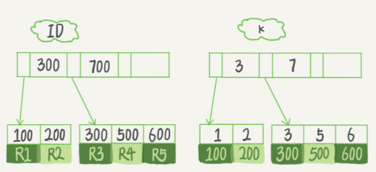

04、深入浅出索引（上）
索引的出现其实就是为了提高数据查询的效率，就像书的目录一样。
索引的常见模型
索引常用的数据结构，分别是哈希表、有序数组和搜索树。
哈希表这种结构适用于只有等值查询的场景，做区间查询的速度是很慢的
有序数组在等值查询和范围查询场景中的性能就都非常优秀，但只适用于静态存储引擎
二叉树 是搜索效率最高的，但是实际上大多数的数据库存储却并不使用二叉树。其原因是，索引不止存在内存中，还要写到磁盘上。
为什么不用二叉树要用N叉树？
一棵100万节点的平衡二叉树，树高20。一次查询可能需要访问20个数据块。在机械硬盘时代，从磁盘随机读一个数据块需要10 ms左右的寻址时间。也就是说，对于一个100万行的表，如果使用二叉树来存储，单独访问一个行可能需要20个10 ms的时间。
为了让一个查询尽量少地读磁盘，就必须让查询过程访问尽量少的数据块。那么，我们就不应该使用二叉树，而是要使用“N叉”树。这里，“N叉”树中的“N”取决于数据块的大小。
以InnoDB的一个整数字段索引为例，这个N差不多是1200。这棵树高是4的时候，就可以存1200的3次方个值，这已经17亿了。考虑到树根的数据块总是在内存中的，一个10亿行的表上一个整数字段的索引，查找一个值最多只需要访问3次磁盘。其实，树的第二层也有很大概率在内存中，那么访问磁盘的平均次数就更少了。
N叉树由于在读写上的性能优点，以及适配磁盘的访问模式，已经被广泛应用在数据库引擎中了。不管是哈希还是有序数组，或者N叉树，它们都是不断迭代、不断优化的产物或者解决方案。数据库技术发展到今天，跳表、LSM树等数据结构也被用于引擎设计中
InnoDB 的索引模型
在InnoDB中，表都是根据主键顺序以索引的形式存放的，这种存储方式的表称为索引组织表。
InnoDB 使用了 B+树索引模型，所以数据都是存储在B+树中的。每一个索引在InnoDB里面对应一棵B+树。
假设，我们有一个主键列为ID的表，表中有字段k，并且在k上有索引。
这个表的建表语句是：
1 | create table T(id int primary key,k int not null,name varchar(16),index (k)) engine=InnoDB; |
表中 R1~R5 的(ID,k)值分别为(100,1)、(200,2)、(300,3)、(500,5)和(600,6)，两棵树的示例示意图如下。
根据叶子节点的内容，索引类型分为 主键索引 和 非主键索引
主键索引的叶子节点存的是整行数据。在InnoDB里，主键索引也被称为聚簇索引（clustered index）
非主键索引的叶子节点内容是主键的值。在InnoDB里，非主键索引也被称为二级索引（secondary index）
基于主键索引和普通索引的查询有什么区别？
如果语句是
select * from T where ID=500，即主键查询方式，则只需要搜索ID这棵B+树；如果语句是
select * from T where k=5，即普通索引查询方式，则需要先搜索k索引树，得到ID的值为500，再到ID索引树搜索一次。这个过程称为 回表
也就是说，基于非主键索引的查询需要多扫描一棵索引树。因此，我们在应用中应该尽量使用主键查询。
索引维护
B+树为了维护索引有序性，在插入新值的时候需要做必要的 维护。以上面这个图为例，如果插入新的行ID值为700，则只需要在R5的记录后面插入一个新记录。如果新插入的ID值为400，就相对麻烦了，需要逻辑上挪动后面的数据，空出位置。
而更糟的情况是，如果R5所在的数据页已经满了，根据B+树的算法，这时候需要申请一个新的数据页，然后挪动部分数据过去。这个过程称为 页分裂。在这种情况下，性能自然会受影响。除了性能外，页分裂操作还影响数据页的利用率。原本放在一个页的数据，现在分到两个页中，整体空间利用率降低大约50%。当然有分裂就有合并。当相邻两个页由于删除了数据，利用率很低之后，会将数据页做合并。合并的过程，可以认为是分裂过程的逆过程。
你可能在一些建表规范里面见到过类似的描述，要求建表语句里一定要有自增主键。当然事无绝对，我们来分析一下哪些场景下应该使用自增主键，而哪些场景下不应该?
自增主键是指自增列上定义的主键，在建表语句中一般是这么定义的： NOT NULL PRIMARY KEY AUTO_INCREMENT。
插入新记录的时候可以不指定ID的值，系统会获取当前ID最大值加1作为下一条记录的ID值。也就是说，自增主键的插入数据模式，正符合了我们前面提到的递增插入的场景。每次插入一条新记录，都是追加操作，都不涉及到挪动其他记录，也不会触发叶子节点的分裂。而有业务逻辑的字段做主键，则往往不容易保证有序插入，这样写数据成本相对较高。
除了考虑性能外，我们还可以从存储空间的角度来看。假设你的表中确实有一个唯一字段，比如字符串类型的身份证号，那应该用身份证号做主键，还是用自增字段做主键呢？
由于每个非主键索引的叶子节点上都是主键的值。如果用身份证号做主键，那么每个二级索引的叶子节点占用约20个字节，而如果用整型做主键，则只要4个字节，如果是长整型（bigint）则是8个字节。
显然，主键长度越小，普通索引的叶子节点就越小，普通索引占用的空间也就越小。所以，从性能和存储空间方面考量，自增主键往往是更合理的选择。
什么场景适合用业务字段直接做主键的呢？
比如，有些业务的场景需求是这样的：
- 只有一个索引；
- 该索引必须是唯一索引。
这就是典型的KV场景。由于没有其他索引，所以也就不用考虑其他索引的叶子节点大小的问题。这时候我们就要优先考虑上一段提到的“尽量使用主键查询”原则，直接将这个索引设置为主键，可以避免每次查询需要搜索两棵树。